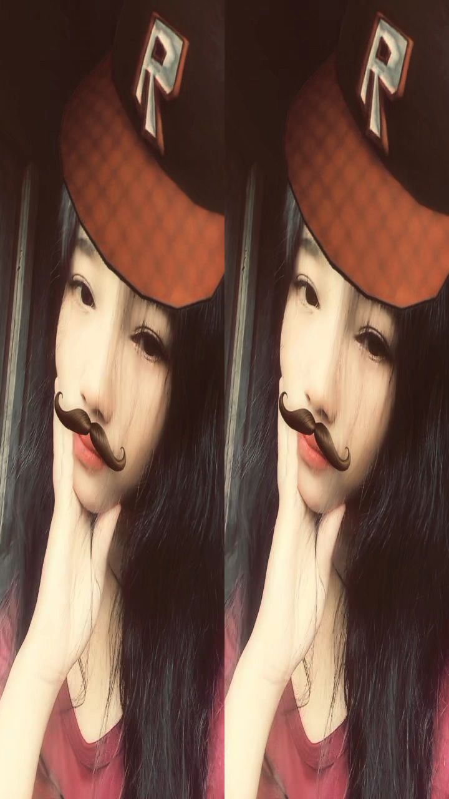
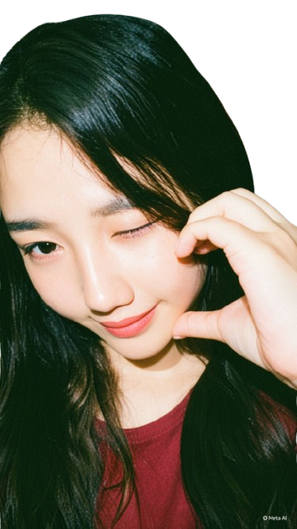

Sejak ada kamu di hidupku, semuanya jadi terasa jauh lebih indah. Halaman ini sengaja aku buat khusus untukmu, sebagai tanda kecil betapa berartinya dirimu buat aku.
Mengingat kembali hari-hari yang sudah kita lewati bersama selalu berhasil membuat aku tersenyum sendiri. Walaupun kita terhalang jarak dan harus LDR, mengingat kembali momen-momen kebersamaan kita selalu berhasil membuat aku tersenyum sendiri. Setiap tawa, obrolan random malam hari, bahkan hal-hal kecil yang kita lakukan selalu punya tempat tersendiri di hatiku.
Aku bersyukur banget bisa kenal kamu, bisa berjalan sejauh ini sama kamu. Yah, walaupun kita kenalnya dari game, tapi semua ini terasa nyata banget. Kamu adalah tempat pulang paling nyaman, dan orang pertama yang selalu ingin aku cari di akhir hari yang melelahkan.
Lewat tulisan ini, aku juga ingin menyampaikan sesuatu yang mungkin jarang atau belum sempat aku katakan dengan sempurna secara langsung...

Terima kasih ya sudah bertahan, terima kasih sudah selalu sabar menghadapi aku, dan terima kasih karena sudah lahir ke dunia ini lalu mencintaiku. Aku sayang kamu hari ini, esok, dan seterusnya. Forever & always. 💕
